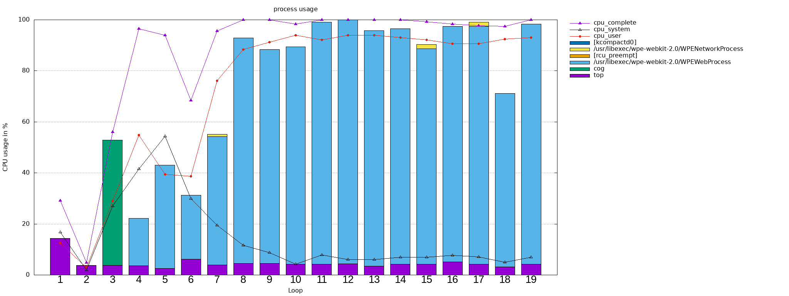

tbottest.tc - Testcases¶
tbot-test come bundled with a bunch of testcases. Here is an overview:
Common Testcases¶
CAN Tests¶
CPU Tests¶
- tbottest.tc.cpu.board_lnx_cpufreq(lnx: Optional[LinuxShell] = None, cpufreq=None) None[source]¶
simple cpufreq setup tests.
look for all elements in cpufreq, if the file in “file” contains the value “val”
- Parameters:
lnx – linux machine we work on
cpufreq – List of dictionary see below
cpufreq = [ {"file" : "/sys/devices/system/cpu/cpufreq/policy0/scaling_governor", "val" : "performance"}, {"file" : "/sys/devices/system/cpu/cpufreq/policy0/cpuinfo_max_freq", "val" : "1600000"}, {"file" : "/sys/devices/system/cpu/cpufreq/policy0/stats/time_in_state", "val" : "0"}, ]
generic board test¶
HAB (imx specific)¶
KAS¶
- class tbottest.tc.kas.KAS(cfg: dict)[source]¶
Bases:
objecthelper class for building yocto projects with kas
example:
from kas import KAS cfgkas = { "kasurl" : "url from where kas sources get downloaded", "kasversion" : "kas version", "build_machine" : "machinename", "subdir" : "temp/customer", "kascontainer" : True, "netrc_file" : "path to .netrc file, sets NETRC_FILE", "git_credential_store" : "/home/<username>/.git-credentials", "ssh_dir" : "/home/<username>/.ssh", "kaslayer" : "192.168.1.107:<path_to_kasconfig_layer>", "kaslayername" : "name_of_repo", "kaslayerbranch" : "dunfell", "kasconfigfile" : "<pathto>/kas-machinename-denx.yml", "bitbakeenvinit" : "sources/poky/oe-init-build-env", "envinit" : [""], "buildtargets" : ["core-image", "rescueimage-fit", "swu-image"] "bitbakeoptions" : ["-q -q"] }
kasurl
if you need (or want) to download kas sources from an url, set this.
You do not need to install kas from this sources, as this class simply use run-kas script from within the kas sources.
kasversion
kas version which get checkedout, when you download kas
build_machine
machine name which is used for the build
subdir
based on the build machines workdir, kas sources get checkout into subdir
kas-container
to build with kas-container script set kascontainer to True You may need to pass –git-credential-store to the kas-container script. Set this through:
git_credential_store
You may need to pass –ssh-dir to the kas-container script. Set this Set this through:
ssh_dir
You may need to pass a .netrc file, so set the kas environment varaible NETRC_FILE.
Set this through:
netrc_file
You may want to set the used container engine through KAS_CONTAINER_ENGINE Set this through:
kascontainerengine
You may want to add “–runtime-args” to kas-container, so set
kas_runtime_args
example:
"kas_runtime_args" : '"-v /work/hs/yocto/download:/workdownload"',
You need the
`"`so escape them!kaslayer
sources which contain your kas config file(s). This class downloads them into kas_get_basepath / “kasconfig”
kaslayername
you can give them an unique name
kaslayerbranch
branch which is used
kasconfigfile
kas config file which is used
auto.conf
You can define here an auto.conf file, if you need to add special settings. The file is created after kas_checkout ends.
"auto.conf" : ['DL_DIR="/workdownload"', 'SSTATE_DIR="/worksstate-cache"', ],
bitbakeenvinit
if you are not using a kas container you need to source the oe environment script (and may have to setup more stuff) before you can call bitbake. This entry contains a list of commandstrings, which are executed when kas has checkout the source code. Default is “sources/poky/oe-init-build-env”
envinit
Here you can add additional commands you need, when you build in kas-container
buildtargets
array of strings containing the names of the build targets with which bitbake is called.
If string “bitbake” is in buildtargets, bitbake command is not added to command.
For example you can write
"buildtargets" : ["core-image", "DISTRO=poky-rescue bitbake rescueimage-fit", "swu-image"]
which will result in the following bitbake calls
$ bitbake core-image $ DISTRO=poky-rescue bitbake rescueimage-fit $ bitbake rescueimage-fit $ bitbake swu-image
bitbakeoptions
options with which bitbake is called (for example you may want to pass -q) So with above setting:
"bitbakeoptions" : ["-q -q"]
you get the bitbake calls:
$ bitbake -q -q core-image $ DISTRO=poky-rescue bitbake rescueimage-fit $ bitbake -q -q rescueimage-fit $ bitbake -q -q swu-image
- kas_get_basepath() Path[source]¶
get the basepath where kas works in at your build host
@tbot.testcase def try_kas_getbasepath( lab: Optional[linux.LinuxShell] = None, bh: Optional[linux.LinuxShell] = None, ): with tbot.ctx() as cx: if lab is None: lab = cx.request(tbot.role.LabHost) if bh is None: bh = cx.request(tbot.role.BuildHost) cfgkas["labhost"] = lab cfgkas["buildhost"] = bh kas = KAS(cfgkas) val = kas.kas_get_basepath()
- kas_checkout() None[source]¶
call “kas checkout” so kas checksout all the needed sources for your ow build, and setup conf directory.
- kas_build(buildtargets=None) None[source]¶
build all buildtargets.
LED¶
- tbottest.tc.leds.lnx_test_led_simple(lnx: Optional[LinuxShell] = None, leds: List[dict] = None) None[source]¶
simple linux led test. Looks if led file ‘brightness’ has after boot the ‘bootval’ value, than sets the ‘onval’ value, checks if ‘brightness’ file has now this value, and set it back to ‘bootval’.
simple … may we can check gpio register, or i2c gpio expander value… perfect would be to recognize the led through a webcam…
- Parameters:
lab – linux machine we work on
lnx – board linux machine
leds – List of dictionary, see below
leds = [ {"path":"/sys/class/leds/led_blue", "bootval":"0", "onval":"1"}, ]
MTD¶
network¶
process¶
- tbottest.tc.process.ps_parse_ps(log) None[source]¶
parse the log output from ps command called with the options
`pid,tid,pcpu,nice,priority,comm", "H", "-C", pname`Warning
This works not with the busybox version
- tbottest.tc.process.ps_parse_top(log, busybox) None[source]¶
parse the log output from top command called with the options
top -b -n X -d X -c -H | awk ‘($1==”%Cpu(s):”)||($8==”R”)||($1==”MiB”) {print}’
if busybox is True, we get log from busybox output, which is
You get back an arrray containing dictionary
{"loop":<loop>, "cpu_system":<cpu dictionary>, "values",<array of values>}
cpu dictionary contains a dictionary of the form:
{'USER': '93.8', 'SYSTEM': '4.4', 'NICE': '0.0', 'IDLE': '1.8', 'WA': '0.0', 'HI': '0.0', 'SI': '0.0', 'ST': '0.0'}
array of values contain dictionaries of the form:
{'PID': '267', 'USER': 'weston', 'PR': '20', 'NI': '0', 'VIRT': '243672', 'RES': '85304', 'SHR': '13792', 'S': 'R', 'CPU': '62.5', 'MEM': '17.0', 'TIME': '93:29.61', 'CMD': '/usr/bin/weston'}
- tbottest.tc.process.lnx_get_process_cpu_usage(lab: LinuxShell, lnx: LinuxShell, pname: str) None[source]¶
get the current cpu usage of process with name
`pname`you get back a dict of the following format:
{'PID': '172', 'USER': 'root', 'PR': '20', 'NI': '0', 'VIRT': '14720', 'RES': '4340', 'SHR': '3748', 'S': 'S', 'CPU': '0.0', 'MEM': '0.9', 'TIME': '3:31.29', 'CMD': 'rngd'}
- tbottest.tc.process.lnx_get_cpu_stats(lnx: LinuxShell) None[source]¶
get cpu stats from top command
you get back a dict of the following format:
{'CPU': '0.0', 'SYS': '20.0', 'NI': '0.0', 'IDLE': '75.0', 'WA': '0.0', 'HI': '0.0', 'SI': '5.0', 'ST': '0.0'}
- tbottest.tc.process.lnx_measure_process(lnx: LinuxShell, pname: str, intervall: float, loops: int) None[source]¶
measure for a process with name
`pname`the cpu usage with`intervall`and`loops`. If`pname`is empty, measure all processes.Warning
This works not with the busybox version
you get back an array which contains a dictionary with entry
{"loop":<loop>, "values",<array of values>}
Array of values contains a dictionary with, see
tbottest.tc.process.ps_parse_ps()If there is no such process
`values`entry is empty
- tbottest.tc.process.is_busybox(lnx: LinuxShell, cmd: str) bool[source]¶
detect if we have a busybox version of command
`cmd`
- tbottest.tc.process.lnx_measure_top(lnx: LinuxShell, intervall: float, loops: int) None[source]¶
call top with intervall
`intervalland`loops`and analyse ityou get back an array which contains a dictionary described in testcase
- tbottest.tc.process.ps_create_measurement_png(local: LinuxShell, pname, intervall, loops, result) None[source]¶
create a png on local host based on the results result from testcase:
tbottest.tc.process.lnx_measure_process()store the gnuplot data in
results/measurements/process/{loops}_{intervall}_{pname}.dat
call gnuplot with the config file
results/measurements/process/gnuplot-bar.gp
The output png is stored in
`process-usage.png`. Example for viewing it:$ gwenview process-usage.png
example usage of this testcase:
loops = 30 intervall = 1.0 pname = "QtWebEngineProc" with tbot.ctx() as cx: if lab is None: lab = cx.request(tbot.role.LabHost) if lnx is None: lnx = cx.request(tbot.role.BoardLinux) result = lnx_measure_process(lnx, pname, intervall, loops) local = cx.request(tbot.role.LocalHost) ps_create_measurement_png(local, pname, intervall, loops, result)
- tbottest.tc.process.top_create_measurement_png(local: LinuxShell, intervall, loops, result) None[source]¶
create a png on local host based on the results result from testcase:
tbottest.tc.process.lnx_measure_top()store the gnuplot data in
results/measurements/process/{loops}_{intervall}_top.dat
call gnuplot with the config file
results/measurements/process/gnuplot-bar-cpustat.gp
The output png is stored in
`process-usage.png`. Example for viewing it:$ gwenview process-usage.png
example usage of this testcase:
loops = 30 intervall = 1.0 with tbot.ctx() as cx: if lab is None: lab = cx.request(tbot.role.LabHost) if lnx is None: lnx = cx.request(tbot.role.BoardLinux) result = lnx_measure_top(lnx, intervall, loops) local = cx.request(tbot.role.LocalHost) top_create_measurement_png(local, intervall, loops, result)
example png:

RS485¶
Sensors¶
- tbottest.tc.sensors.board_lnx_tempsensors(lnx: Optional[LinuxShell] = None, sensors=None) None[source]¶
prerequisite: Board boots into linux
test temp sensors
- Parameters:
lnx – linux machine where we work on
sensors – List of dictionary, see below
sensors = [{"path":"full path to sensor", "name":"name of the sensor", "tmpvalues":[{"valname":"name of the sensor value", "min":"minimal allowed value", "max":"maximal allowed value"}]}] sensors = [ {"path" : "/sys/bus/i2c/drivers/tmp102/0-0048/hwmon/hwmon0", "name" : "tmp102", "tmpvalues" : [{"valname" : "temp1_input", "min" : "0", "max" : "100000"}]}, {"path" : "/sys/bus/i2c/drivers/tmp102/0-0049/hwmon/hwmon1", "name" : "tmp102", "tmpvalues" : [{"valname" : "temp1_input", "min" : "0", "max" : "100000"}]}, {"path" : "/sys/bus/i2c/drivers/tmp102/0-004a/hwmon/hwmon2", "name" : "tmp102", "tmpvalues" : [{"valname" : "temp1_input", "min" : "0", "max" : "100000"}]}, {"path" : "/sys/bus/i2c/drivers/tmp102/0-004b/hwmon/hwmon3", "name" : "tmp102", "tmpvalues" : [{"valname" : "temp1_input", "min" : "0", "max" : "100000"}]}, ]
SWUpdate¶
Testcases for testing devices which use swupdate.
- tbottest.tc.swu.board_lnx_check_swu(lab: Optional[LinuxShell] = None, usesshmachine: bool = False) None[source]¶
check if swupdate-client.py is installed on lab host if not, try install into lab.toolsdir
- Parameters:
lab – lab machine where we work on
usesshmachine – set to True if you want to use labs sshmachine instead of lab
- tbottest.tc.swu.board_lnx_swu(lab: Optional[LinuxShell] = None, lnx: Optional[LinuxShell] = None, swuimage: str = None, ipaddr: str = None, usesshmachine: bool = False)[source]¶
install swuimage with swupdate_client.py on lab_host to board with ipaddr.
- Parameters:
lab – lab linux machine
lnx – board linux machine
swuimage – path to swuimage
ipaddr – address of board to where swuimage gets installed
usesshmachine – set to True if you want to use labs sshmachine instead of lab
- tbottest.tc.swu.swu_swupdate_from_file(lab: Optional[LinuxShell] = None, lnx: Optional[LinuxShell] = None, swuimage: str = None) str[source]¶
update the software with swupdate on the lnx machine.
Use swupdate-image binary on lnx machine with swupdate image swuimage (full path to swuimage)
- Parameters:
lab – lab linux machine
lnx – board linux machine
swuimage – path to swuimage
SystemD¶
- tbottest.tc.systemd.systemd_stop_service(lnx: Optional[LinuxShell] = None, name: str = '') None[source]¶
stops a service on linux machine lnx
- Parameters:
lnx – board linux machine
name – name of the systemd service
TPM¶
- tbottest.tc.tpm.board_lnx_tpm2(lab: Optional[LinuxShell] = None, lnx: Optional[LinuxShell] = None) None[source]¶
simply check if we find some strings from tpm start check, if tpm has correct major version. And check if eltt2 tool detects correct vendor
TODO: Make this testcase more generic.
- Parameters:
lab – lab linux machine
lnx – board linux machine
U-Boot¶
- class tbottest.common.ubootbuild.UBBUILDMAN(lab: LinuxShell, bh: LinuxShell, ubootpatchsubpath: Optional[str] = None, ubootbinariessubpath: Optional[str] = None, defconfig: Optional[str] = None, resultbins: list = [], makelist: list = [])[source]¶
Bases:
objectsimple class for some useful buildman tool abstractions for building U-Boot. You can define a subdirname “binsubpath” which is a subdir on lab hosts tftp directory in which needed binaries for complete and working U-Boot build are found. tbot copies all files found in this subdirectory to U-Boots build directory on build host.
Same for downsream patches. You can define a name for a subdirectory found on labhosts tftp directory for the board with name “ubootpatchsubpath”. All patches found in this directory, are copied to U-Boot source directory on build host and applied to the current U-Boot source code.
The list of resulting binaries in resultbins you can copy to lab hosts tftp path with
You may need to call also some make targets you can add through list of strings in makelist
- Parameters:
lab – lab host machine. must be valid
bh – build host machine, must be valid
ubootpatchsubpath – str subdir on labhosts tftp directory with downstream U-Boot patches
defconfig – defconfig name of the board
binariessubpath – str subdir on labhosts tftp directory where needed binaries are found
resultbins – list of strings of resulting binarienames
makelist – list of strings of make targets
B = [ { 'defconfig': 'foo', 'ubootpatchsubpath': 'uboot-patches', 'binsubpath': 'binaries', 'resultbinaries': ['flash.bin'], 'makelist': ['flash.bin'], }, ] for b in B: bmcfg = UBBUILDMAN(lab, bh, b["ubootpatchsubpath"], b["binsubath"], b["defconfig"], b["resultbinaries"]) bmcfg.bm_build_board() bmcfg.bm_copy_results2lab()
Yocto¶
- tbottest.tc.yocto.check_yocto_build_install_sdk(lnx: LinuxShell = None, sdk_install_path: str = None, sdk_path: str = None, sdk_name: str = None) None[source]¶
install SDK.
- Parameters:
lnx – board linux machine
sdk_install_path – path to where the SDK gets installed
sdk_path – path where to find the SDK installation scirpt
sdk_name – SDK installation scripts name